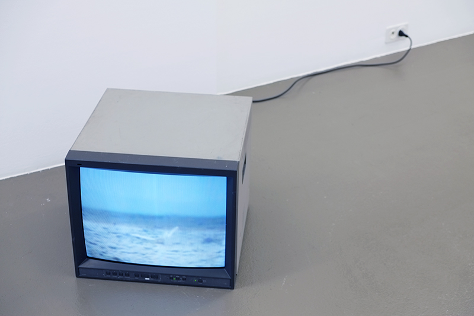

This is not another blog for now it's a test

As part of Ultra-red’s twenty-year anniversary in 2014, the collective published nine workbooks detailing sound investigations conducted between 2010 and 2014. Since 1994, the international collective Ultra-red has launched militant sound investigations in social movements such as HIV/AIDS justice, housing, anti-racism, struggles of migration, radical education, and resistance to the war on the poor. The workbooks in this set range from short-term inquiries to long-term investigations drawing on years of work embedded in specific
Since reviewing the Turner prize exhibition as it opened, it is Assemble’s project that has stayed with me – though at the time I enjoyed Bonnie Camplin’s project, with its evocation of paranoia and conspiracy theories, very much. Nicole Wermer’s arrangement of Marcel Breuer’s Bauhaus Cesca chairs, each of which had a luxuriant fur coat draped across its back, felt like a particularly chilly academic exercise. Watching Janice Kerbel’s Doug – with its black-clad singers and its limp, sometimes winsome doggerels – I kept thinking of the toe-curling acapella concert amusements the King’s Singers provide. It was dreadfully overwritten. Assemble’s win signifies a larger move away from the gallery into public space that is becoming ever more privatised. It shows a revulsion for the excesses of the art market, and a turn away from the creation of objects for that market. Their structure that was on show at this year’s Turner exhibition must be seen not as a work, but as a model of work that takes place elsewhere; not in the art world, but the world itself.
Tags: self-publishing, public art
related galleries: Brise-Lame (corrugated steel version)